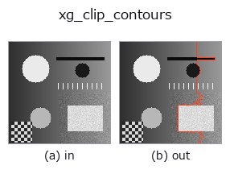

xldgeom op• Datenarten: contour → contour
• Aufruf: fullseye.apply(img, "xg_clip_contours", a=0.5, b=0.5) (das 2-D-Modell ist ein Bild plus zwei skalare Regler a,b∈[0,1])

*Die Abbildung ist die tatsächliche Ausgabe auf einer synthetischen 128×128-Eingabe. Links Eingabe, rechts Ausgabe. Punktwolken als Draufsicht-Streudiagramm (Helligkeit = z), 1-D-Reihen als Linie, Volumen als Maximum-Projektion entlang z, Videos als mittleres Bild, komplexe Bilder als Betrag; Rückgabewerte, die kein Bild ergeben, werden als Werte gezeigt.*
Regler a durchfahren (0,1 / 0,5 / 0,9, der andere Regler auf Standard):
▸ xg_clip_contours: Regler a durchfahren (Doku-Website)
*Regler b ändert die Ausgabe nicht (gemessen: identisch bei 0,1 / 0,5 / 0,9).*
Stufen (die vorangehenden Ops → dieser Op, von links nach rechts):
▸ xg_clip_contours: Stufen (Doku-Website)
Auf anderen Bildern (synthetische Szene / Foto / Münzen. Obere Reihe: Eingaben, untere Reihe: deren Ausgaben. Regler auf Standard):
▸ xg_clip_contours: andere Eingaben (Doku-Website)
Verwirft Konturen, deren Polylinienlänge unter a × Maximallänge liegt (a in [0,1]).
Berechnet die Polygonzuglänge jeder Kontur (Summe der euklidischen Abstände benachbarter Punkte) und behält, bezogen auf die Länge L_max der längsten Kontur, nur Konturen mit length >= a * L_max. a wird auf [0,1] begrenzt (Clipping); a=0 behält alle Konturen, a=1 nur die längste Kontur (bei gleicher Länge mehrere). b wird nicht verwendet.
Rückgabewert ist ein Kontur-Dict im selben {"shape", "cs"}-Format wie die Eingabe (Punktarrays werden kopiert). Gibt es keine Konturen, ist cs leer. Bei L_max <= 1e-12 (jede Kontur ist 1 Punkt) werden alle Konturen unverändert zurückgegeben. Da der Schwellwert nicht auf die Bildgröße, sondern "relativ zur längsten Kontur" bezogen ist, verschiebt sich das Auswahlkriterium, wenn sich die längste Kontur ändert (für eine Auswahl nach absoluter Punktzahl select_contours_xld). Anders als der Name vermuten lässt, wird nicht mit einem Rechteck abgeschnitten, sondern nach Länge ausgewählt (Abschneiden mit einem Rechteck: xg_crop_contours / hx_clip_contours). Der doppelte Endpunkt geschlossener Konturen geht in die Länge ein, hat als Kante der Länge 0 aber keine Wirkung.
• Leitfaden zur Familie gallery2d_geometry
• Katalog der Beispieldaten (Download-URLs / Lizenzen) — 2-D nutzt skimage.data (BSD/Public Domain) plus synthetische Bilder, 3-D nennt Download-URLs echter Datenquellen (Stanford, PDS, …).
• Herkunft und Literatur der Operatoren — die Quellen der Forschung/Verfahren, auf denen diese Operatorfamilie beruht.
• Der kanonische Algorithmus (Autor, Jahr) und seine Anwendungen stehen im Familienleitfaden oben.
Das Programm unten ist nachweislich lauffähig (gleiche Eingabe wie die Abbildung). In der Studio-Hilfe wird dieser Block zu Schaltflächen, die es sofort laden und ausführen.
threshold 0.50 0.50 sk_find_contours 0.50 0.50 xg_clip_contours 0.50 0.50
▸ Diese Pipeline laden · Laden & ausführen
• gallery2d_geometry — py -3.11 examples/gallery2d_geometry.py
contour als Eingabe)identity · select_contours · smooth_contours · fit_line_contours · contours_to_region · count_contours · total_length · select_contours_xld
xldgeom)xg_moments · xg_area_center · xg_eccentricity · xg_orientation · xg_elliptic_axis · xg_height_width_ratio · xg_regress_contours · xg_gen_polygons
*Provenance: ops.py — 2D Operator-Registry. Diese Notiz wird von tools/opdocs.py md erzeugt (nicht von Hand bearbeiten).*
© 2026 Kazufumi Furuse — Fullseye operator documentation. Licensed under Apache-2.0.